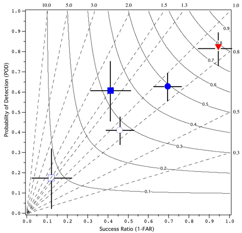

In an approach that is
conceptually similar to the Taylor (2001)
diagram, it is possible to exploit the geometric relationship between
four measures of dichotomous forecast performance: probability of
detection (POD), false alarm ratio or its opposite, the success ratio
(SR), bias and critical success index (CSI; also known as the threat
score). Roebber (2009) presents the
details of the derivation of this diagram.
For good forecasts, POD, SR, bias and CSI approach unity, such that a
perfect forecast lies in the upper right of the diagram. Deviations in
a particular direction will indicate relative differences in POD and
SR, and consequently bias and CSI. An immediate visualization of
differences in performance are thus obtained. Optimal increases in
accuracy are obtained by moving at 45 degrees, that is, by maintaining
unbiased forecasts through simultaneous increases in detection and
reductions in false positives. Skill is assessed by plotting the
forecast quality measure relative to a reference forecast (climatology,
persistence or any other desired baseline).
The influence of sampling variability is estimated using a form of resampling with replacement bootstrapping from the verification data. The 95th percentile range for SR and POD are plotted as "cross-hairs" about the verification point and the variation in bias and CSI is simultaneously displayed. 1000 new samples of the same size as the original are created using the sampling frequencies of observed and forecast "yes" and "no" entries (i.e. the marginal frequencies), and the 25th and 975th accuracy measures are computed from these "climatological" samples to generate the 95th percentile range.
In the example figure, the heavy
and light snow density verification data from Roebber et al. (2003)
(solid blue square and circle, respectively) along with the
corresponding sample frequencies (open blue square and circle,
respectively) are shown. Also shown is the 48h forecast verification
for convective occurrence from Fowle and Roebber (2003) (red triangle).
Fowle, M.A. and P.J. Roebber, 2003: Short-range (0-48 h) numerical prediction of convective occurrence, mode, and location. Wea. Forecasting, 18, 782-794.
Roebber, P.J., 2009: Visualizing multiple measures of forecast quality. Wea. Forecasting, 24, 601-608.
Roebber, P.J., S.L. Breuning, D.M. Schultz, and J.V. Cortinas, Jr.,
2003: Improving snowfall forecasting by diagnosing snow density. Wea.
Forecasting, 18, 264-287.
Taylor, K.E., 2001: Summarizing multiple aspects of model performance in a single diagram. J. Geophys. Res., 106 (D7), 7183-7192.
Code: The R verification package contains code for making performance diagrams, using the function performance.diagram.